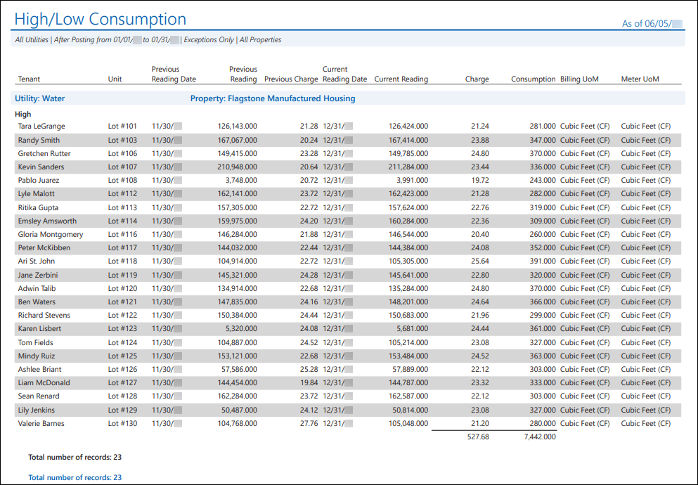
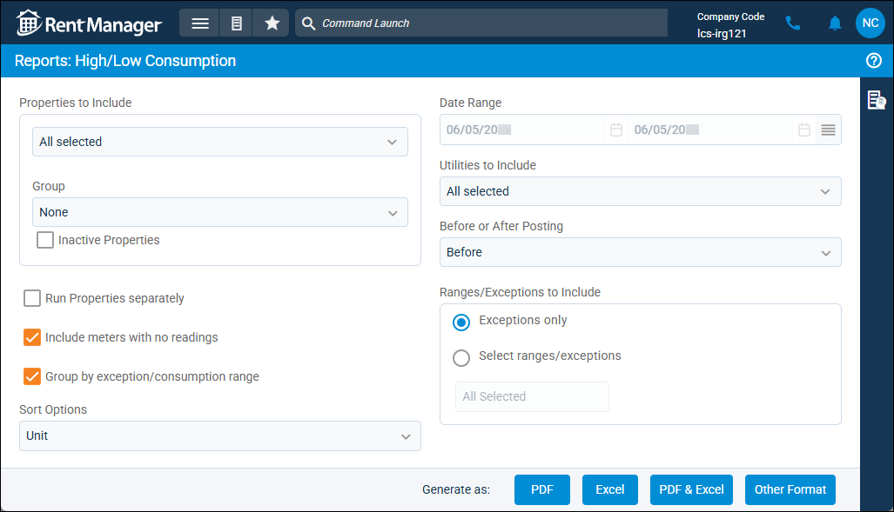
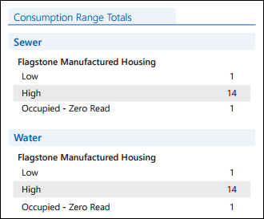

Source: https://rmxhelp.rentmanager.com/Topics/Express/Other/Reports/High-Low-Consumption.htm
High/Low Consumption (Report)
The High/Low Consumption report displays metered utility readings based on the consumption amount and the consumption range that the amount falls under. This report can be used to review meter readings with abnormally low or high consumption amounts to verify that there are no issues with the meter, or to check with the tenant to understand the cause of their atypical consumption rate.
More Information
To utilize this report, you must first create consumption groups and established ranges to categorize different amounts of consumption and label any notable exceptions. For more information, refer to Manage Metered Utilities High/Low Settings.
Related Privileges
| Group | Privilege | Column |
|---|---|---|
| Letter/Email Templates/Reports/Packets | Run reports | Enabled |
Additionally, on the Reports tab, you must have access to High/Low Consumption.
For more information, refer to Control User Access.
To view the High/Low Consumption report, do the following:
-
Go to
 arrow_forward Services arrow_forward Metered Utilities arrow_forward High/Low Consumption.
arrow_forward Services arrow_forward Metered Utilities arrow_forward High/Low Consumption.
The Reports: High/Low Consumption page displays. -
Adjust the report options as desired. Each option is described below.
-
Generate the report in your desired file format(s).
Related Preferences
Reports may look different depending on whether or not the Use modernized report style system preference is enabled. For more information, refer to General Report Options (System Preferences).

Report Options
The report options described below determine what data displays in the report.

Properties to Include
Select each property or a property Group to be included in the report.
More Information
This field populates only with the properties to which you have access. Your access to properties can be managed from your user account or on the property's details page. For more information, refer to Limit Access to a Property.
Optionally, check Show Inactive Properties to include properties that are no longer active.
Run Properties Separately
Check to generate a separate report for each selected property. Otherwise, all selected properties are combined into a single report.
Include Meters with No Readings
Check to display meters that do not have any reading history.
Group by Exception/Consumption Range
Check to separate results based on the consumption group associated with the unit's reading.
Sort Options
Select one of the following options to determine how the report results are organized.
| Option | Description |
|---|---|
|
Charge Amt |
Meters are sorted numerically by their Charge value in ascending order (least to greatest). |
|
Consumption |
Meters are sorted numerically by their Consumption value in ascending order (least to greatest). |
|
Exception Name |
Meters are sorted alphanumerically by the name of the consumption group marked as an exception. This sort option is available only if the Group by exception/consumption range report option is not selected. |
|
Move In |
Meters are sorted chronologically by their associated tenant's Move In date in ascending order (earliest to latest). |
|
Tenant |
Meters are sorted alphabetically by the associated tenant's Last Name. Tenants marked as Company are sorted alphabetically by Company Name. |
|
Unit |
Meters are sorted alphanumerical by the associated unit's Name. |
Date Range
Enter or select the date range to determine the data that displays in the report. This range can be modified only if, in the Before or After Posting drop-down list, After is selected. Otherwise, the report uses the current date.
In the Date Range section, set the From and To dates for which the report should examine data.
These fields automatically populate with today’s date. Enter a different date or select a date from the calendar. Alternatively, adjust the dates using the available preset buttons or click  to open more options for setting a date range.
to open more options for setting a date range.
Utilities to Include
Select each utility to be examined in the report.
Before or After Posting
Select an option to determine which meter readings display in the report. For more information, refer to Meter Readings (Page).
| Option | Description |
|---|---|
|
Before |
Meter readings that have been entered but have not been posted. |
|
After |
Meter readings that have been posted with a Post Date that falls within the report Date Range. |
Ranges/Exceptions to Include
Select the consumption ranges and exceptions to include. By default, Exceptions only is selected and the report displays only meters with readings or estimated readings that meet the criteria of an exception-type consumption range. Alternatively, click Select ranges/exceptions and select the desired consumption ranges to include.
More Information
The consumption ranges included in this drop-down list are dependent on the selected Properties to Include and Utilities to Include. If the selected properties and/or utilities have never had meter readings documented, this list contains only the Consumption is zero (0) option.
Report Results
The report results are described below including, if applicable, section, column, and subreport descriptions.
Report Header
The report header displays the report name and key information selected in the report options, such as date information and which properties were examined in the report.
Column Descriptions
The columns that display in the report are described below.
More Information
If any meters were swapped during the date range, this is indicated in the readings columns with the output <Swap>. For swapped meters, a subsection displays the meter reading information for both the New Meter and Old Meter. For more information, refer to Swap Meters.
| Column | Description |
|---|---|
|
Billing UoM |
The unit of measurement (e.g., Gallons, Cubic Feet (CF)) used for billing utility usage. |
|
Charge |
The dollar amount charged for the current meter reading. |
|
Consumption |
The consumption amount calculated by subtracting the Previous Reading from the Current Reading. If the reading was estimated, the reading amount is appended with (Est.). If the reading was part of a rollover, the reading amount is appended with (Rollover). |
|
Consumption Range |
The name of the consumption group based on the defined consumption range and the meter's Consumption amount or estimated Consumption amount. This column displays only if the Exceptions only and Group by exception/consumption range report options are not selected. |
|
Current Reading |
The most recent meter reading or estimated reading as of the date this report is run. |
|
Current Reading Date |
The date the Current Reading was recorded. |
|
Exception |
The name of the consumption group marked as an exception, based on the metered utility's consumption range. This column displays only if the Exceptions only report option is selected and the Group by exception/consumption range report option is not selected. |
|
Exception Reason |
The name of the reason for the exception. This column displays when at least one Current Reading being displayed on the report has an Exception Reason defined. When Before is selected in the report options, the report populates exception reasons associated with the current readings. When After is selected in the report options, the report populates exceptions associated with the posted readings within the defined date range. |
|
Image |
If an image was attached to the most recent meter reading on the Meter Readings page or in rmAppSuite Pro, |
|
Meter UoM |
The unit of measurement (e.g., Gallons, Cubic Feet (CF)) used on the meter for tracking utility usage. |
|
Previous Charge |
The dollar amount charged for the previous meter reading. |
|
Previous Reading |
The last meter reading recorded before the Current Reading. |
|
Previous Reading Date |
The date the Previous Reading was recorded. |
|
Tenant |
The name of the tenant occupying the meter's associated unit as of the date the report was run. If the unit is unoccupied, <VACANT> displays. |
|
Unit |
The name of the unit associated with the meter. |
Consumption Range Totals Subreport
The Consumption Range Totals subreport displays each consumption range and the total number of meters whose actual or estimated consumption falls within those ranges, separated by utility.
